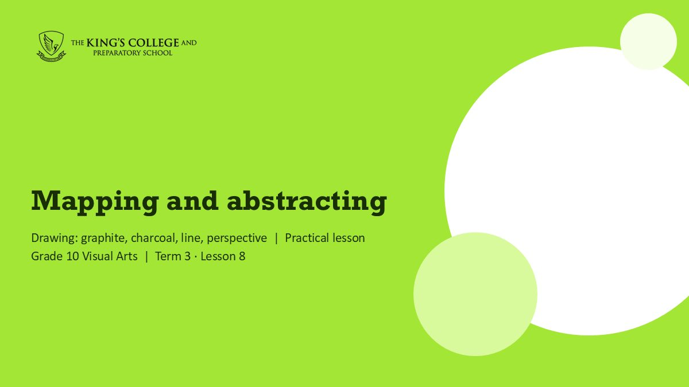

Term 3 · Lesson 8 · Practical lesson
Mapping and abstracting
Start here
Today I will
- Map the tones of my reference photo into flat shapes
- Simplify the face into a few clear tonal shapes
- Make one abstracted version and annotate my choices
Think first
How few shapes do you need before a face is still recognisable?
Words to know
- Mapping
- Tracing the edges of each area of tone so the face becomes a 'map' of flat shapes.
- Tonal shape
- A flat area of one value (tone), such as one patch of shadow.
- Abstraction
- Simplifying or changing a subject so shapes, lines or colours matter more than detail.
- Simplify
- Leave out small details and keep the biggest, most important shapes.
- Value scale
- A strip of steps from light to dark, used to sort tones.
Slides

Notes
Mapping a face as tonal shapes; simplifying and abstracting a portrait.
Mapping a face in tonal shapes
- Squint: Squint at the photo to see big shapes of light and dark instead of features.
- Choose three or four values: White (light), two greys (mid) and black (dark). Make a small value scale.
- Trace the edges: On tracing paper, outline the edge of each shape of tone, not the eyes or lips as symbols.
- Fill flat: Fill each shape with one even value. No blending: every shape stays flat.
From mapped to abstracted
| Mapped version | Abstracted version |
|---|---|
| Shapes follow the photo closely. | Shapes are simplified, joined or exaggerated. |
| Three or four values, still realistic. | Only two or three values, or tones swapped for pattern or colour. |
| Edges are curved as in the photo. | Edges may become straight, geometric or rhythmic. |
| The likeness is strong. | The likeness is suggested; mood and design become the focus. |
Remember
Draw the shapes of light and shadow, and the face will appear.
Practical
You need: Reference photo, tracing paper, HB and 4B pencils, masking tape, VJ
Map, then abstract your portrait
- Tape tracing paper over your photo with masking tape.
- Squint and trace the edges of the shapes of tone in three or four values.
- Fill each shape flat with one value, from light to dark. Add a small value scale at the side.
- On a second sheet, make one abstracted version: fewer shapes, simpler edges or a new pattern.
- Paste both into your VJ next to the photo.
- Annotate: what did you leave out, what did you keep, and which version has more impact?
Test yourself
- What does mapping a face mean?
- Why do we squint at the photo?
- Give one way an abstracted portrait differs from a mapped one.
Show answers
1. Tracing the edges of the areas of tone so the face becomes flat shapes of value. 2. Squinting removes detail so you see the big light and dark shapes. 3. Any one: fewer shapes, simpler or geometric edges, fewer values, pattern instead of tone, likeness suggested rather than exact.
Finished early?
Squint map of an object
Practise mapping on something simple before your face.
- Look at an object on your desk, such as a mug, and squint.
- Draw only the outlines of the shapes of tone you see, no details.
- Fill each shape flat with one of three values: white, grey or black.
- Draw a second, abstracted version with fewer, straighter shapes.